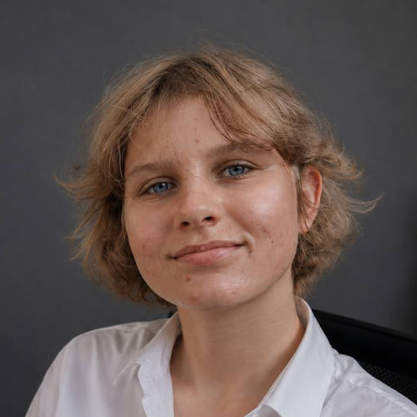

Образование
ВКИ НГУ
2019 - 2023
Программирование в компьютерных системах

Project Coordinator / Junior Project Manager
Помогаю командам уточнять требования, видеть риски и зависимости, синхронизировать разработчиков, дизайнеров и 3D-специалистов.
Образование
2019 - 2023
Программирование в компьютерных системах
Обо мне
Коммерческий опыт разработки приложений на Unity для iOS и создания VR-тренажёров помогает мне понимать разработчиков, реалистично оценивать задачи и объяснять технические вопросы нетехническим участникам проекта.
Мои лидерские навыки подтверждают пять лет работы тренером детской команды по парусному спорту и опыт организации соревнований в качестве спортивного судьи первой категории.
Опыт работы
Навыки координации
Навыки из работы в яхт-клубе
Технические навыки
Unity Engine · C# · VR · WebGL · iOS · Kotlin · Git · YouTrack · Figma · Rider · Visual Studio · Android Studio · SOLID · KISS · DRY · MVC · Zenject · Shader Graph · DOTween
Публичный проект
Образовательное iOS-приложение на Unity с интерактивными 3D-моделями и AR. Остальные коммерческие проекты закрыты NDA.
Открыть в App Store ↗Подтверждение опыта
Оригинальное рекомендательное письмо i-GLOBAL CORP с подписью и печатью приложено к резюме отдельной неизменённой страницей.
Открыть оригинал ↗